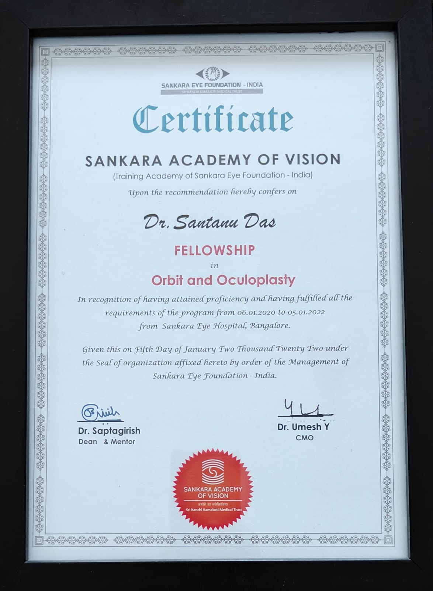

Achievements & Publications
Recognitions, academic milestones, research publications, and certifications honoring specialized training in orbital, oculoplastic, and reconstructive surgery. Click any image to view it in full size.

World Congress of Ocular Trauma
Won the Best Poster Award for "Eyebrow reconstruction following trauma" at the World Congress of Ocular Trauma held in New Delhi (December 2019).

KOSCON 2021
Awarded Best Paper in Oculoplasty and Ocular Oncology for "Postero-medial canthal Thermoplasty in the management of long-standing facial nerve palsy" at the KOSCON (Karnataka Ophthalmological Society Conference) 2021 virtual conference.

AIOS 2019
Presented "Methodology of choice of Orbital Implants in orbital fracture patients" in the prestigious best free paper award session (Col. Rangachari award) at AIOS 2019.

Cybersight - Ptosis 101
Awarded for completion of Ptosis 101: Evaluation and Management (1-Hour Webinar) by Dr. Daniel Neely, Professor of Ophthalmology, Indiana University School of Medicine.
.png)
Cybersight - Neurofibromatosis 1
Awarded for completion of Neurofibromatosis 1: An Update on Screening and Management (1.5-Hour Webinar) certified by Cybersight.


Mahidol University, Bangkok, Thailand
Successfully completed the Clinical Fellowship Training Program in Orbital and Ophthalmic Plastic and Reconstructive Surgery at Faculty of Medicine Siriraj Hospital (July 2025 – June 2026).

Orbit and Oculoplasty Fellowship
Conferred by Sankara Academy of Vision (Sankara Eye Foundation - India) after attaining proficiency from January 2020 to January 2022 at Sankara Eye Hospital, Bangalore.

APSOPRS & NESOS Masterclass
Completed the Masterclass in Orbital Surgery "Hands-on Cadaveric Dissection Course" conducted by APSOPRS and NESOS at Dhulikhel Hospital, Nepal (May 2026).

AO CMF Seminar - Midface & Orbit Reconstruction
Attended and completed training on Midface and Orbit Reconstruction in Primary and Secondary Deformities held in Quezon City, Philippines (Nov 2025).

Ocular TraumaCON 2018
Recognized for significant contribution as Faculty / Delegate at Ocular TraumaCON 2018 held at ITC Grand Chola, Chennai, granted by The Tamil Nadu Dr. MGR Medical University.

KOSCON 2019 - Belagavi
Presented free paper on "Spectrum of Ocular Surface Squamous Neoplasia (OSSN) and its management - a case series" at KOSCON 2019 (Nov 2019).
Publications
- 1. Das S, Nagesh N, Hegde R. Reconstructing the socket. Sudanese J Ophthalmol 2019;11: 62-4.
- 2. Das S, Vidhya C. Profile of Presenile Cataract in Karnataka. EC Ophthalmology 12.7 (2021):44-51.
- 3. Das S, Nagesh N, Hegde R. Pattern causes and management of eyelid and adnexal injuries in a tertiary hospital. Int J Ocul Oncol Oculoplasty 2019;5(3):112-7.
- 4. Das S, Nagesh N, Hegde R. Ocular surface squamous neoplasia. Current Indian Eye Research 2019; 6:4-16.
- 5. Das S, Kumar L K. Comparative study of intraocular pressure measured by non-contact, rebound and Goldmann applanation tonometer and their correlation with corneal thickness and true IOP in a general population. Indian J Clin Exp Ophthalmol 2020;6(1):41-49.
- 6. Das S, Hegde R. Methodology of Choice of Orbital Implants and Surgical Outcomes in Orbital Fracture Patients, ARC Journal of Ophthalmology 2019;4(2):16-25.
- 7. Das S, Kumar LK. Comparative study of intraocular pressure measured by non-contact, rebound and Goldmann applanation tonometer and their correlation with corneal thickness in a general population. EJBPS. 2019; 6(11):227-235.
- 8. Contributing author in a multicentric study on mucormycosis. Epidemiology, clinical profile, management, and outcome of COVID 19 associated rhino orbital cerebral mucormycosis in 2826 patients in India Collaborative OPAI IJO Study on Mucormycosis.
- 9. Das S, Rambhatla S. Targeted Therapy in Orbital and Periocular Disorders: A Review. Journal of Vision Sciences 2024; 3(1):19-30.